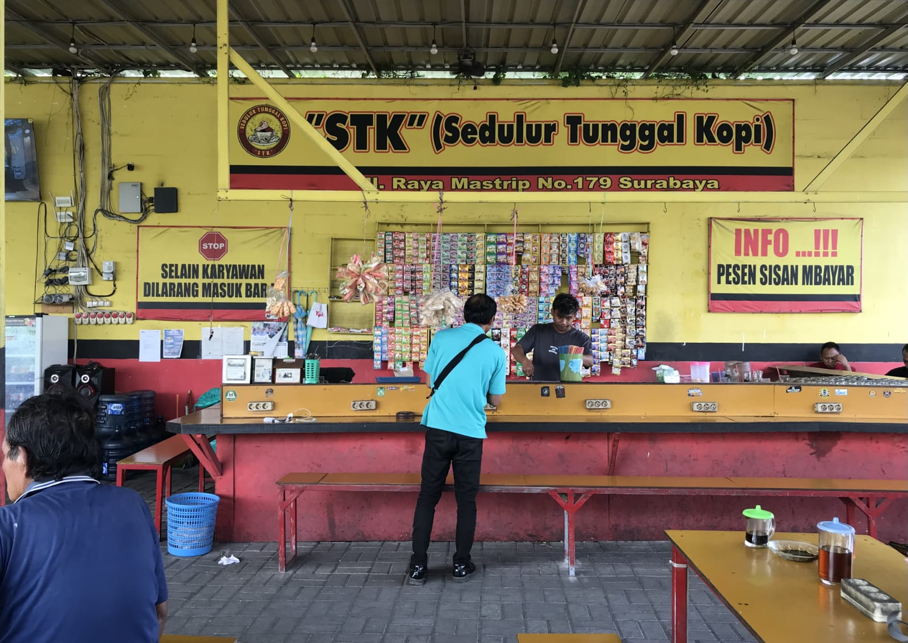

Warung Kopi "STK" (Sedulur Tunggal Kopi) - Tempat santai, ngopi murah, dan silaturahmi tanpa batas.
Terletak strategis di Jl. Raya Mastrip No.179, Surabaya, STK hadir sebagai wadah kumpul bagi semua kalangan. Mengusung konsep keakraban ("Sedulur"), kami menyediakan tempat nongkrong yang nyaman, merakyat, dan siap melayani cangkrukan hingga larut malam.

Bikin betah nongkrong, ngerjain tugas, atau mabar game
Tiap meja dilengkapi colokan listrik untuk charge HP / Laptop.
Akses internet lancar untuk browsing, kerja, atau mabar.
Kapasitas luas cocok untuk rombongan atau komunitas.
Parkiran aman untuk sepeda motor pelanggan.
Mampir dan rasakan kehangatan cangkrukan di Surabaya
Jl. Raya Mastrip No.179, Surabaya, Jawa Timur
Buka Setiap Hari: 06.00 - 02.00 WIB
Selain Karyawan Dilarang Masuk Bar. Pesen Sisan Mbayar.